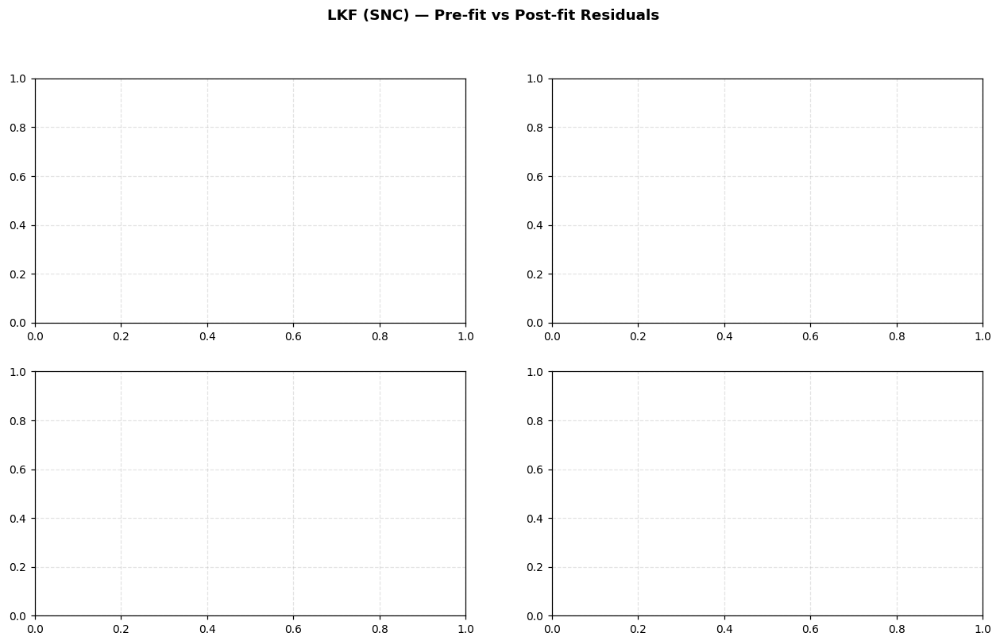

# Sequential Orbit Determination — Complete Demo#
Scarabaeus OD Framework | Last revised 2026
What this notebook covers#
Sequential orbit determination processes measurements one at a time (or batch-by-batch), updating the state estimate and covariance recursively. This is operationally efficient, supports real-time processing, and naturally handles process noise through the filter equations.
Topics#
# |
Topic |
|---|---|
1 |
Setup, spacecraft, and true trajectory |
2 |
Measurement generation |
3 |
LKF (Linearized Kalman Filter) with SNC process noise |
4 |
Process noise deep dive — SNC vs. DMC |
5 |
First-Order Gauss-Markov (FOGM) dynamics + DMC process noise |
6 |
SRIF (Square-Root Information Filter) |
7 |
RTS smoother |
8 |
Multi-leg OD with MissionSequence (two legs + impulsive burn) |
9 |
Consider parameters |
10 |
Measurement editing in sequential context |
11 |
Solution saving and full analysis |
How to run#
Run from the project root directory (scarabaeus/).
0. Imports and Setup#
[1]:
import os, sys
import numpy as np
import numpy.random as rnd
import matplotlib.pyplot as plt
import scarabaeus as scb
# Navigate to project root
if os.path.basename(os.getcwd()) == 'tutorials':
os.chdir('..')
print(f"Working directory : {os.getcwd()}")
os.makedirs('data/measurements/radiometric', exist_ok=True)
os.makedirs('data/kernels/scenario', exist_ok=True)
kg, km, sec = scb.Units.get_units(['kg', 'km', 'sec'])
J2000, ITRF93, ECLIPJ2000, IAUEARTH = scb.Frame.generate_common_frames()
frame = J2000
origin = scb.CelestialBody.from_constants('SUN')
mk = os.path.join('data', 'kernels', 'locked', 'locked_generic.tm')
scb.SpiceManager.clear_kernels()
scb.SpiceManager.load_kernel_from_mkfile(mk)
print("Kernels loaded.")
# ── common spacecraft & initial state ────────────────────────────
dry_mass = scb.ArrayWUnits(1500.0, kg)
fuel_mass = scb.ArrayWUnits(500.0, kg)
area = scb.ArrayWUnits(1e-6, km**2)
cr = scb.ArrayWUnits(1.5, None)
Orbiter = scb.Spacecraft('Orbiter_True', -2000,
dry_mass+fuel_mass, area, cr)
time_0 = scb.SpiceManager.jd2et(2461809.72995654 + 1/3)
time_f = scb.SpiceManager.jd2et(2461809.72995654 + 3)
dt_step = 30 * 60
epoch_array = scb.EpochArray(np.arange(time_0, time_f, dt_step), time_frame='TDB')
epoch_0 = epoch_array[0]
pos_0 = scb.ArrayWFrame(
np.array([-1.1123095885148e+08, 8.9094345479316e+07, 3.8656500948069e+07]),
km, frame)
vel_0 = scb.ArrayWFrame(
np.array([-20.6936999825159, -16.7800270812616, -6.6437327193572]),
km/sec, frame)
Working directory : /Users/zael5647/scarabaeus/docs/online_documentation/sphinx_files/_collections
---------------------------------------------------------------------------
SpiceNOSUCHFILE Traceback (most recent call last)
/var/folders/_q/_0gmy5p50pbf60yk0vzw402c0000gp/T/ipykernel_11730/800120014.py in ?()
18 origin = scb.CelestialBody.from_constants('SUN')
19
20 mk = os.path.join('data', 'kernels', 'locked', 'locked_generic.tm')
21 scb.SpiceManager.clear_kernels()
---> 22 scb.SpiceManager.load_kernel_from_mkfile(mk)
23 print("Kernels loaded.")
24
25 # ── common spacecraft & initial state ────────────────────────────
~/scarabaeus/src/scarabaeus/timeAndFrame/SpiceManager.py in ?(furnshKernelFilename)
2309 Returns
2310 -------
2311 None
2312 """
-> 2313 spice.furnsh(furnshKernelFilename)
~/scarabaeus/.venv/lib/python3.11/site-packages/spiceypy/spiceypy.py in ?(*args, **kwargs)
148 res = f(*args, **kwargs)
149 check_for_spice_error(f)
150 return res
151 except BaseException:
--> 152 raise
~/scarabaeus/.venv/lib/python3.11/site-packages/spiceypy/spiceypy.py in ?(f)
128 explain = getmsg("EXPLAIN", 100).strip()
129 long = getmsg("LONG", 1841).strip()
130 traceback = qcktrc(200)
131 reset()
--> 132 raise dynamically_instantiate_spiceyerror(
133 short=short, explain=explain, long=long, traceback=traceback
134 )
SpiceNOSUCHFILE:
================================================================================
Toolkit version: CSPICE_N0067
SPICE(NOSUCHFILE) --
The first file '../data/kernels/locked/ck/cas00084.tsc' specified by KERNELS_TO_LOAD in the file data/kernels/locked/locked_generic.tm could not be located.
furnsh_c --> FURNSH --> ZZLDKER
================================================================================
Enhanced Plotting Helpers#
The cells below add calendar-date x-axis versions of the plots above, plus new visualization types: pre/post residual comparisons, state errors with ±3σ covariance bounds, covariance evolution, and corner covariance plots.
Helper functions:
et2dt(et_arr)— converts SPICE ET (seconds) to Pythondatetimeobjectsfmt_cal(ax)— appliesAutoDateLocator + DateFormatterfor a clean calendar x-axisadd_hrs_axis(ax)— adds a secondary top x-axis in hours from t0resid_from_filter(flt, ds)— extracts(t_pre, r_pre, t_post, r_post)arrayscorner_cov(P, labels)— lower-triangle corner plot with RdBu_r correlation colouring
[2]:
from datetime import datetime
import matplotlib.dates as mdates
import matplotlib.ticker as mticker
from matplotlib import cm
from matplotlib.colors import Normalize
plt.rcParams.update({
'font.size': 10, 'axes.titlesize': 11, 'axes.labelsize': 10,
'xtick.labelsize': 9, 'ytick.labelsize': 9, 'legend.fontsize': 8,
'figure.dpi': 110, 'axes.grid': True, 'grid.alpha': 0.35, 'grid.linestyle': '--',
})
CMAP = cm.tab10
COLORS = [CMAP(i / 10) for i in range(10)]
# reference epoch for the hours-from-t0 secondary axis
t0_et = float(epoch_array[0])
def et2dt(et_arr):
"""Convert SPICE ET seconds to list of datetime objects."""
out = []
for t in np.atleast_1d(et_arr):
s = scb.SpiceManager.et2utc(float(t))
try:
parts = s.split()
s2 = f"{parts[0]} {parts[1].capitalize()} {int(parts[2]):02d} {parts[3][:8]}"
out.append(datetime.strptime(s2, "%Y %b %d %H:%M:%S"))
except Exception:
out.append(datetime(2021, 1, 1))
return out
def fmt_cal(ax):
"""Apply calendar-date tick formatting to a matplotlib axis."""
ax.xaxis.set_major_locator(mdates.AutoDateLocator(minticks=4, maxticks=9))
ax.xaxis.set_major_formatter(mdates.DateFormatter("%b %d\n%H:%M"))
def add_hrs_axis(ax, t0=None):
"""Add a secondary top x-axis showing hours from t0."""
t0 = t0 if t0 is not None else t0_et
from matplotlib.dates import date2num
t0_num = date2num(et2dt([t0])[0])
ax2 = ax.secondary_xaxis(
"top",
functions=(lambda x: (x - t0_num) * 24, lambda x: x / 24 + t0_num),
)
ax2.set_xlabel("Hours from t0 [TDB]", fontsize=8)
ax2.xaxis.set_major_formatter(mticker.FormatStrFormatter("%.0f h"))
return ax2
def resid_from_filter(flt_obj, ds_name):
"""Return (t_pre, r_pre, t_post, r_post) numpy arrays for a dataset name.
Times are read from flt_obj.measurement_data (per-dataset t2 column).
Residual values come from the [res, sigma] entries in pre/postfit_residuals.
"""
pre = flt_obj.prefit_residuals.get(ds_name, [])
post = flt_obj.postfit_residuals.get(ds_name, [])
# Retrieve t2 epochs for this dataset from the filter's measurement data
t_ds = np.array([])
for ds in flt_obj.measurement_data.datasets:
if ds.set_name == ds_name:
t_ds = np.array(ds.data["t2"])
break
t_pre = t_ds[:len(pre)] if len(pre) else np.array([])
r_pre = np.array([d[0] for d in pre]) if pre else np.array([])
t_post = t_ds[:len(post)] if len(post) else np.array([])
r_post = np.array([d[0] for d in post]) if post else np.array([])
return t_pre, r_pre, t_post, r_post
def corner_cov(P, labels, title="Covariance Corner Plot", figsize=(9, 8)):
"""Lower-triangle corner plot. Diagonal: 1-sigma. Off-diagonal: correlation."""
n = P.shape[0]
sig = np.sqrt(np.diag(P))
Corr = P / np.outer(sig, sig)
fig, axes = plt.subplots(n, n, figsize=figsize)
if n == 1:
axes = np.array([[axes]])
fig.suptitle(title, fontsize=11, fontweight="bold")
cmap_r = cm.RdBu_r
for i in range(n):
for j in range(n):
ax = axes[i, j]
ax.set_xticks([]); ax.set_yticks([])
if i == j:
ax.set_facecolor("#dbeafe")
ax.text(0.5, 0.62, f"1σ = {sig[i]:.2e}", ha="center", va="center",
transform=ax.transAxes, fontsize=6.5, fontweight="bold")
ax.text(0.5, 0.32, labels[i], ha="center", va="center",
transform=ax.transAxes, fontsize=6.5, color="navy")
elif i > j:
c = float(Corr[i, j])
ax.set_facecolor(cmap_r((c + 1) / 2))
ax.text(0.5, 0.5, f"{c:+.2f}", ha="center", va="center",
transform=ax.transAxes, fontsize=7.5,
color="white" if abs(c) > 0.6 else "black")
else:
ax.set_visible(False)
sm = cm.ScalarMappable(cmap=cmap_r, norm=Normalize(-1, 1)); sm.set_array([])
fig.colorbar(sm, ax=axes, fraction=0.02, pad=0.01, shrink=0.6, label="Correlation")
plt.tight_layout()
return fig
print(f"Plotting helpers ready. t0 = {scb.SpiceManager.et2utc(t0_et)}")
---------------------------------------------------------------------------
NameError Traceback (most recent call last)
Cell In[2], line 16
13 COLORS = [CMAP(i / 10) for i in range(10)]
15 # reference epoch for the hours-from-t0 secondary axis
---> 16 t0_et = float(epoch_array[0])
19 def et2dt(et_arr):
20 """Convert SPICE ET seconds to list of datetime objects."""
NameError: name 'epoch_array' is not defined
1. True Trajectory and Measurements#
We propagate the truth and generate Range + RangeRate measurements on it (DSS-14). These are the “observed” measurements the filter will try to explain.
The measurement generation is identical to the Batch notebook — see that notebook for the full measurement-model catalogue (Doppler, DDOR, optical navigation).
[3]:
# ── propagate truth ──────────────────────────────────────────────
third_bodies = ['MERCURY', 'VENUS', 'EARTH']
state_truth = scb.StateDefinition.from_components([
('position', 3, 'estimated', 'dynamic', Orbiter, pos_0),
('velocity', 3, 'estimated', 'dynamic', Orbiter, vel_0),
])
sv_truth = scb.StateArray(epoch=epoch_0, origin=origin, state=state_truth)
fm_truth = scb.ForceModelTranslation(primary_body=Orbiter,
third_bodies=third_bodies, cannonball_SRP=True)
prop_truth = scb.Propagator(primary_body=Orbiter, state_vector=sv_truth,
tspan=epoch_array, force_models=fm_truth)
prop_truth.propagate()
state_prop_truth = prop_truth.propagated_state_array
true_spk = 'data/kernels/scenario/seq_orbiter_true.bsp'
if os.path.isfile(true_spk): os.remove(true_spk)
orbiter_traj_true = scb.Trajectory(state_array=state_prop_truth)
orbiter_traj_true.write_to_spk(true_spk)
print(f"True trajectory saved.")
# ── generate measurements ─────────────────────────────────────────
GS1 = scb.GroundStation('DSS-14')
range_sigma = scb.ArrayWUnits(1e-3, km)
rr_sigma = scb.ArrayWUnits(1e-5, km/sec)
Range_GS1 = scb.RangeIdeal('GS1 Range', GS1, sigma=range_sigma)
RangeRate_GS1 = scb.RangeRateIdeal('GS1 RRate', GS1, sigma=rr_sigma)
Range_GS1.write_observed_measurements(
target=Orbiter, epoch_array=epoch_array, noisy=True, file_name='seq_range_GS1')
RangeRate_GS1.write_observed_measurements(
target=Orbiter, epoch_array=epoch_array, noisy=True, file_name='seq_rr_GS1')
obs_range = Range_GS1.observed_measurements(
file_name='data/measurements/radiometric/seq_range_GS1.json',
meas_name='meas_ideal', units=km)
obs_rr = RangeRate_GS1.observed_measurements(
file_name='data/measurements/radiometric/seq_rr_GS1.json',
meas_name='meas_ideal', units=km/sec)
print(f"Range measurements : {len(obs_range[2])}")
print(f"RangeRate measurements: {len(obs_rr[2])}")
---------------------------------------------------------------------------
NameError Traceback (most recent call last)
Cell In[3], line 5
1 # ── propagate truth ──────────────────────────────────────────────
2 third_bodies = ['MERCURY', 'VENUS', 'EARTH']
4 state_truth = scb.StateDefinition.from_components([
----> 5 ('position', 3, 'estimated', 'dynamic', Orbiter, pos_0),
6 ('velocity', 3, 'estimated', 'dynamic', Orbiter, vel_0),
7 ])
8 sv_truth = scb.StateArray(epoch=epoch_0, origin=origin, state=state_truth)
9 fm_truth = scb.ForceModelTranslation(primary_body=Orbiter,
10 third_bodies=third_bodies, cannonball_SRP=True)
NameError: name 'Orbiter' is not defined
2. LKF with SNC Process Noise#
Theory#
The Linearized Kalman Filter (LKF) is the core sequential estimator. At each measurement epoch \(t_k\):
Time update (predict): propagate state and covariance forward with the STM
\[\mathbf{P}_{k|k-1} = \mathbf{\Phi}_{k,k-1}\,\mathbf{P}_{k-1|k-1}\,\mathbf{\Phi}_{k,k-1}^T + \mathbf{Q}_k\]Measurement update (correct): incorporate new measurement \(y_k\)
\[\mathbf{K}_k = \mathbf{P}_{k|k-1}\,\mathbf{H}_k^T\,(\mathbf{H}_k\mathbf{P}_{k|k-1}\mathbf{H}_k^T + \mathbf{R}_k)^{-1}\]\[\hat{\mathbf{x}}_{k|k} = \hat{\mathbf{x}}_{k|k-1} + \mathbf{K}_k(y_k - \mathbf{H}_k\hat{\mathbf{x}}_{k|k-1})\]
State Noise Compensation (SNC)#
SNC models uncharacterised accelerations as white noise added continuously to the velocity:
where \(q_c\) [km²/s³] is the continuous-time noise spectral density.
Tuning Q_cont (SNC):
Too large → wide covariance, accepts noise, position sigma grows fast.
Too small → filter stiffens, can’t track maneuvers or unmodelled forces.
Rule of thumb: \(q_c \approx (\text{expected unmodelled accel})^2 / \text{arc length in sec}\)
Q_cont = scb.ProcessNoiseSettings(type='SNC', Q_cont=Q_cont_matrix)
[4]:
# ── reference spacecraft (perturbed IC) ──────────────────────────
delta_pos_km = np.array([1.0, 1.0, 1.0])
delta_vel_kms = np.array([1e-3, 1e-3, 1e-3])
def make_ref_sc(name, spice_id, d_pos, d_vel):
sc = scb.Spacecraft(name, spice_id, dry_mass+fuel_mass, area, cr)
pos = scb.ArrayWFrame(pos_0.quantity + scb.ArrayWUnits(d_pos, km), frame)
vel = scb.ArrayWFrame(vel_0.quantity + scb.ArrayWUnits(d_vel, km/sec), frame)
return sc, pos, vel
sc_lkf, pos_lkf, vel_lkf = make_ref_sc('Orbiter_LKF', -2001,
delta_pos_km, delta_vel_kms)
state_lkf = scb.StateDefinition.from_components([
('position', 3, 'estimated', 'dynamic', sc_lkf, pos_lkf),
('velocity', 3, 'estimated', 'dynamic', sc_lkf, vel_lkf),
])
sv_lkf = scb.StateArray(epoch=epoch_0, origin=origin, state=state_lkf)
fm_lkf = scb.ForceModelTranslation(
primary_body=sc_lkf, third_bodies=third_bodies, cannonball_SRP=True)
prop_lkf = scb.Propagator(
primary_body=sc_lkf, state_vector=sv_lkf,
tspan=epoch_array, force_models=fm_lkf)
# ── initial covariance ────────────────────────────────────────────
pos_sig = scb.ArrayWUnits(3.0, km)
vel_sig = scb.ArrayWUnits(3e-3, km/sec)
P0 = scb.CovarianceMatrix(
[pos_sig]*3 + [vel_sig]*3, epoch_array[1], from_list=True)
# ── SNC process noise ─────────────────────────────────────────────
# q_c = (1e-9 km/s²)² = 1e-18 km²/s⁴ per axis — light SNC for well-modelled dynamics
Q_diag = scb.ArrayWUnits(1e-9**2, km**2 * sec**-4)
Q_cont = scb.CovarianceMatrix([Q_diag]*3, epoch_array[0], from_list=True)
pn_snc = scb.ProcessNoiseSettings(type='SNC', Q_cont=Q_cont)
# ── measurement list ─────────────────────────────────────────────
meas_lkf = scb.MeasurementSpec.many(
scb.MeasurementSpec(model=Range_GS1, observed_meas=obs_range,
dataset_name='GS1 Range'),
scb.MeasurementSpec(model=RangeRate_GS1, observed_meas=obs_rr,
dataset_name='GS1 RangeRate'),
)
# ── LKF ──────────────────────────────────────────────────────────
ref_spk_lkf = 'data/kernels/scenario/seq_orbiter_ref_lkf.bsp'
if os.path.isfile(ref_spk_lkf): os.remove(ref_spk_lkf)
lkf = scb.LKF(
propagator = prop_lkf,
settings = scb.FilterSettings(
initial_covariance = P0,
process_noise = pn_snc,
output = scb.OutputSettings(metadata={'filter':'LKF-SNC'}),
),
measurements = meas_lkf,
traj_name = 'seq_orbiter_ref_lkf.bsp',
)
print("Running LKF with SNC ...")
sol_lkf, ni_lkf, conv_lkf = lkf.fit(
max_iterations = 5,
convergence_threshold= 1e-6,
verbose = True,
traj_name = 'seq_orbiter_ref.bsp',
if_sequential_smooth = False, # smoother off — see Section 5
)
print(f"Converged: {conv_lkf} after {ni_lkf} iterations")
---------------------------------------------------------------------------
NameError Traceback (most recent call last)
Cell In[4], line 11
8 vel = scb.ArrayWFrame(vel_0.quantity + scb.ArrayWUnits(d_vel, km/sec), frame)
9 return sc, pos, vel
---> 11 sc_lkf, pos_lkf, vel_lkf = make_ref_sc('Orbiter_LKF', -2001,
12 delta_pos_km, delta_vel_kms)
14 state_lkf = scb.StateDefinition.from_components([
15 ('position', 3, 'estimated', 'dynamic', sc_lkf, pos_lkf),
16 ('velocity', 3, 'estimated', 'dynamic', sc_lkf, vel_lkf),
17 ])
18 sv_lkf = scb.StateArray(epoch=epoch_0, origin=origin, state=state_lkf)
Cell In[4], line 6, in make_ref_sc(name, spice_id, d_pos, d_vel)
5 def make_ref_sc(name, spice_id, d_pos, d_vel):
----> 6 sc = scb.Spacecraft(name, spice_id, dry_mass+fuel_mass, area, cr)
7 pos = scb.ArrayWFrame(pos_0.quantity + scb.ArrayWUnits(d_pos, km), frame)
8 vel = scb.ArrayWFrame(vel_0.quantity + scb.ArrayWUnits(d_vel, km/sec), frame)
NameError: name 'dry_mass' is not defined
[5]:
# ── plot LKF results ─────────────────────────────────────────────
scb.Plotting.get_fig_handle(
scb.Plotting.plot_state_errors(
sol_lkf, orbiter_traj_true, epoch_array, 3,
title='LKF (SNC) — State Errors vs Truth'
)
)
scb.Plotting.get_fig_handle(
scb.Plotting.plot_postfits_scatter(
sol_lkf, epoch_array,
lkf.measurement_data.dataset_names, 3
)
)
plt.show()
---------------------------------------------------------------------------
NameError Traceback (most recent call last)
Cell In[5], line 4
1 # ── plot LKF results ─────────────────────────────────────────────
2 scb.Plotting.get_fig_handle(
3 scb.Plotting.plot_state_errors(
----> 4 sol_lkf, orbiter_traj_true, epoch_array, 3,
5 title='LKF (SNC) — State Errors vs Truth'
6 )
7 )
8 scb.Plotting.get_fig_handle(
9 scb.Plotting.plot_postfits_scatter(
10 sol_lkf, epoch_array,
11 lkf.measurement_data.dataset_names, 3
12 )
13 )
14 plt.show()
NameError: name 'sol_lkf' is not defined
Enhanced: LKF (SNC) — Pre-fit vs Post-fit Residuals (Calendar Date)#
[6]:
fig, axes = plt.subplots(2, 2, figsize=(14, 8))
fig.suptitle("LKF (SNC) — Pre-fit vs Post-fit Residuals", fontsize=12, fontweight="bold")
for row, (ds_name, sigma_val, ylabel) in enumerate([
("GS1 Range", float(range_sigma.values) * 1e3, "Range residual [m]"),
("GS1 RangeRate",float(rr_sigma.values) * 1e6, "RangeRate residual [mm/s]"),
]):
scale = 1e3 if row == 0 else 1e6
t_pre, r_pre, t_post, r_post = resid_from_filter(lkf, ds_name)
for col, (t_r, r_r, label) in enumerate(
[(t_pre, r_pre, "Pre-fit"), (t_post, r_post, "Post-fit")]
):
ax = axes[row, col]
if len(t_r):
ax.plot(et2dt(t_r), r_r * scale, ".", ms=3, color=COLORS[row*2+col], alpha=0.7)
ax.axhline(0, color="k", lw=0.6, ls="--")
ax.axhline( 3 * sigma_val, color="r", lw=0.9, ls="--", alpha=0.7, label="±3σ")
ax.axhline(-3 * sigma_val, color="r", lw=0.9, ls="--", alpha=0.7)
ax.set_title(f"{ds_name} — {label}")
ax.set_ylabel(ylabel); ax.set_xlabel("Calendar Date [UTC]")
fmt_cal(ax); ax.legend()
plt.tight_layout(); plt.show()
---------------------------------------------------------------------------
NameError Traceback (most recent call last)
Cell In[6], line 5
1 fig, axes = plt.subplots(2, 2, figsize=(14, 8))
2 fig.suptitle("LKF (SNC) — Pre-fit vs Post-fit Residuals", fontsize=12, fontweight="bold")
4 for row, (ds_name, sigma_val, ylabel) in enumerate([
----> 5 ("GS1 Range", float(range_sigma.values) * 1e3, "Range residual [m]"),
6 ("GS1 RangeRate",float(rr_sigma.values) * 1e6, "RangeRate residual [mm/s]"),
7 ]):
8 scale = 1e3 if row == 0 else 1e6
9 t_pre, r_pre, t_post, r_post = resid_from_filter(lkf, ds_name)
NameError: name 'range_sigma' is not defined

Enhanced: LKF (SNC) — State Errors with ±3σ Covariance Bounds#
[7]:
et_meas = sol_lkf.timestamps
meas_ep = scb.EpochArray(scb.ArrayWUnits(et_meas, sec), "TDB")
est_pos = sol_lkf.state_est[:, :3]
est_vel = sol_lkf.state_est[:, 3:6]
truth_t = epoch_array.times.values
truth_pos = state_prop_truth.values_array[("position", Orbiter.spice_id)][0]
truth_vel = state_prop_truth.values_array[("velocity", Orbiter.spice_id)][0]
tp_meas = np.column_stack([np.interp(et_meas, truth_t, truth_pos[:, j]) for j in range(3)])
tv_meas = np.column_stack([np.interp(et_meas, truth_t, truth_vel[:, j]) for j in range(3)])
err_pos = est_pos - tp_meas
err_vel = est_vel - tv_meas
P_list = sol_lkf.propagate_covariance(meas_ep)
sig_pos = np.array([np.sqrt(np.diag(P)[:3]) for P in P_list])
sig_vel = np.array([np.sqrt(np.diag(P)[3:6]) for P in P_list])
dts = et2dt(et_meas)
lbl_p = ["Δx [km]", "Δy [km]", "Δz [km]"]
lbl_v = ["Δvx [m/s]", "Δvy [m/s]", "Δvz [m/s]"]
fig, axes = plt.subplots(2, 3, figsize=(14, 8), sharex=True)
fig.suptitle("LKF (SNC) — State Errors vs Truth (±3σ bounds)",
fontsize=12, fontweight="bold")
for col in range(3):
ax = axes[0, col]
ax.plot(dts, err_pos[:, col], "-", lw=1.3, color=COLORS[col], label="Error")
ax.fill_between(dts, 3*sig_pos[:, col], -3*sig_pos[:, col],
alpha=0.20, color=COLORS[col], label="±3σ")
ax.axhline(0, color="k", lw=0.5, ls="--"); ax.set_ylabel(lbl_p[col])
if col == 0: ax.legend(fontsize=8)
fmt_cal(ax); add_hrs_axis(ax, t0_et)
ax = axes[1, col]
ax.plot(dts, err_vel[:, col]*1e3, "-", lw=1.3, color=COLORS[col+3])
ax.fill_between(dts, 3*sig_vel[:, col]*1e3, -3*sig_vel[:, col]*1e3,
alpha=0.20, color=COLORS[col+3])
ax.axhline(0, color="k", lw=0.5, ls="--"); ax.set_ylabel(lbl_v[col])
ax.set_xlabel("Calendar Date [UTC]"); fmt_cal(ax)
plt.tight_layout(); plt.show()
---------------------------------------------------------------------------
NameError Traceback (most recent call last)
Cell In[7], line 1
----> 1 et_meas = sol_lkf.timestamps
2 meas_ep = scb.EpochArray(scb.ArrayWUnits(et_meas, sec), "TDB")
3 est_pos = sol_lkf.state_est[:, :3]
NameError: name 'sol_lkf' is not defined
Enhanced: LKF (SNC) — Covariance Evolution (1-σ components, semilogy)#
[8]:
sig_pos = np.array([np.sqrt(np.diag(P)[:3]) for P in P_list]) # P_list from cell above
sig_vel = np.array([np.sqrt(np.diag(P)[3:6]) for P in P_list])
rss_pos = np.linalg.norm(sig_pos, axis=1)
rss_vel = np.linalg.norm(sig_vel, axis=1)
dts = et2dt(et_meas)
fig, axes = plt.subplots(2, 2, figsize=(13, 7))
fig.suptitle("LKF (SNC) — Covariance Evolution (1-σ)", fontsize=12, fontweight="bold")
lbl_p = ["σx", "σy", "σz"]; lbl_v = ["σvx", "σvy", "σvz"]
ax = axes[0, 0]
for i in range(3): ax.semilogy(dts, sig_pos[:, i]*1e3, lw=1.5, color=COLORS[i], label=lbl_p[i])
ax.set_ylabel("Pos 1-σ [m]"); ax.legend(); fmt_cal(ax); add_hrs_axis(ax, t0_et)
ax = axes[0, 1]
ax.semilogy(dts, rss_pos*1e3, "k-", lw=2); ax.set_ylabel("Pos RSS 1-σ [m]")
fmt_cal(ax); add_hrs_axis(ax, t0_et)
ax = axes[1, 0]
for i in range(3): ax.semilogy(dts, sig_vel[:, i]*1e6, lw=1.5, color=COLORS[i+3], label=lbl_v[i])
ax.set_ylabel("Vel 1-σ [mm/s]"); ax.set_xlabel("Calendar Date [UTC]"); ax.legend(); fmt_cal(ax)
ax = axes[1, 1]
ax.semilogy(dts, rss_vel*1e6, "k-", lw=2); ax.set_ylabel("Vel RSS 1-σ [mm/s]")
ax.set_xlabel("Calendar Date [UTC]"); fmt_cal(ax)
plt.tight_layout(); plt.show()
---------------------------------------------------------------------------
NameError Traceback (most recent call last)
Cell In[8], line 1
----> 1 sig_pos = np.array([np.sqrt(np.diag(P)[:3]) for P in P_list]) # P_list from cell above
2 sig_vel = np.array([np.sqrt(np.diag(P)[3:6]) for P in P_list])
3 rss_pos = np.linalg.norm(sig_pos, axis=1)
NameError: name 'P_list' is not defined
3. Process Noise Deep Dive: SNC vs. DMC#
State Noise Compensation (SNC)#
Models uncharacterised forces as continuous white noise on velocity.
Does not increase state dimension.
Q_contis a 3×3 matrix [km²/s⁴] — one spectral density per acceleration axis.Typical values: 1e-18 (well-modelled) to 1e-12 (significant unmodelled forces) km²/s⁴.
Increases covariance between measurements, preventing filter overconfidence.
Dynamical Model Compensation (DMC)#
Models uncharacterised forces as a first-order Gauss-Markov (FOGM) stochastic process.
The FOGM acceleration
a_fogmis part of the state and is propagated.Requires
ForceModelTranslation(first_order_gauss_markov=True, fogm_beta=...)Process noise type:
'DMC'withbeta=force_model.fogm_beta.
# SNC — no state augmentation
pn = scb.ProcessNoiseSettings(type='SNC', Q_cont=Q_matrix)
# DMC — augmented state with FOGM acceleration
pn = scb.ProcessNoiseSettings(type='DMC', Q_cont=Q_matrix,
beta=force_model.fogm_beta)
When to use which#
Scenario |
Recommendation |
|---|---|
Short arc, well-modelled dynamics |
SNC (small Q) |
Long arc with slow-varying unmodelled forces |
DMC (captures temporal correlation) |
Maneuver estimation during arc |
DMC + FOGM |
Batch filter |
Neither (use PFOGM instead) |
Correlation time and β#
In the FOGM model the force autocorrelation decays as \(e^{-\beta \Delta t}\).
Large β (e.g. 1/60 s⁻¹) → force decorrelates in ~1 minute (rapid white-noise-like behaviour)
Small β (e.g. 1/86400 s⁻¹) → force has memory over ~1 day (slow trend)
Rule of thumb: set β so the correlation time 1/β matches the expected timescale of the unmodelled perturbation.
4. FOGM Dynamics + DMC Process Noise#
The First-Order Gauss-Markov stochastic acceleration is propagated as part of the state. It represents an unmodelled force that decays exponentially with characteristic time 1/β.
State vector: \([r_x, r_y, r_z, v_x, v_y, v_z, a_{fx}, a_{fy}, a_{fz}]\)
The process noise (DMC) drives the FOGM acceleration component.
[9]:
# ── spacecraft with FOGM in state ────────────────────────────────
sc_fogm, pos_fogm, vel_fogm = make_ref_sc('Orbiter_FOGM', -2002,
delta_pos_km, delta_vel_kms)
# Initial FOGM acceleration (zero — no a-priori knowledge of unmodelled force)
a0_fogm = scb.ArrayWFrame(np.zeros(3), km/sec**2, J2000)
# Slight perturbation to a_fogm initial value
da_fogm = scb.ArrayWUnits(np.array([rnd.normal(0, 1e-12)]*3), km/sec**2)
a0_fogm_pert = scb.ArrayWFrame(a0_fogm.quantity + da_fogm, J2000)
state_fogm = (
scb.StateDefinition()
.position(sc_fogm, pos_fogm)
.velocity(sc_fogm, vel_fogm)
.param('a_fogm', sc_fogm, a0_fogm_pert, dynamics='dynamic')
)
sv_fogm = scb.StateArray(epoch=epoch_0, origin=origin, state=state_fogm)
beta_fogm = np.array([1/3600, 1/3600, 1/3600]) # 1-hr correlation time
fm_fogm = scb.ForceModelTranslation(
primary_body = sc_fogm,
third_bodies = third_bodies,
cannonball_SRP = True,
first_order_gauss_markov = True,
fogm_beta = beta_fogm,
)
prop_fogm = scb.Propagator(
primary_body = sc_fogm, state_vector = sv_fogm,
tspan = epoch_array, force_models = fm_fogm)
# ── extended covariance (6 + 3 FOGM) ────────────────────────────
a_sig = scb.ArrayWUnits(1e-10, km/sec**2)
P0_fogm = scb.CovarianceMatrix(
[pos_sig]*3 + [vel_sig]*3 + [a_sig]*3,
epoch_array[1], from_list=True)
# ── DMC process noise ────────────────────────────────────────────
Q_dmc_diag = scb.ArrayWUnits(1e-12**2, km**2 * sec**-4)
Q_dmc_cont = scb.CovarianceMatrix([Q_dmc_diag]*3, epoch_array[0], from_list=True)
pn_dmc = scb.ProcessNoiseSettings(type='DMC', Q_cont=Q_dmc_cont, beta=beta_fogm)
# ── measurement models with FOGM state definition ────────────────
Range_GS1_fogm = scb.RangeIdeal('GS1 Range FOGM', GS1,
sigma=range_sigma, state_definition=state_fogm)
RR_GS1_fogm = scb.RangeRateIdeal('GS1 RR FOGM', GS1,
sigma=rr_sigma, state_definition=state_fogm)
meas_fogm = scb.MeasurementSpec.from_dict([
{'model': Range_GS1_fogm, 'observed_meas': obs_range, 'dataset_name': 'GS1 Range'},
{'model': RR_GS1_fogm, 'observed_meas': obs_rr, 'dataset_name': 'GS1 RangeRate'},
])
# ── LKF with DMC ─────────────────────────────────────────────────
ref_spk_fogm = 'data/kernels/scenario/seq_orbiter_ref_fogm.bsp'
if os.path.isfile(ref_spk_fogm): os.remove(ref_spk_fogm)
lkf_fogm = scb.LKF(
propagator = prop_fogm,
settings = scb.FilterSettings(
initial_covariance = P0_fogm,
process_noise = pn_dmc,
output = scb.OutputSettings(metadata={'filter':'LKF-DMC-FOGM'}),
),
measurements = meas_fogm,
traj_name = 'seq_orbiter_ref_fogm.bsp',
)
print("Running LKF with FOGM dynamics + DMC process noise ...")
sol_fogm, ni_fogm, conv_fogm = lkf_fogm.fit(
max_iterations=5, convergence_threshold=1e-6, verbose=True,
traj_name='seq_orbiter_ref.bsp',
)
print(f"Converged: {conv_fogm} after {ni_fogm} iterations")
# Plot FOGM parameter estimates
scb.Plotting.get_fig_handle(
scb.Plotting.plot_parameters_errors(
sol_fogm, orbiter_traj_true, epoch_array, 3,
title='FOGM Acceleration Estimates'
)
)
plt.show()
---------------------------------------------------------------------------
NameError Traceback (most recent call last)
Cell In[9], line 2
1 # ── spacecraft with FOGM in state ────────────────────────────────
----> 2 sc_fogm, pos_fogm, vel_fogm = make_ref_sc('Orbiter_FOGM', -2002,
3 delta_pos_km, delta_vel_kms)
5 # Initial FOGM acceleration (zero — no a-priori knowledge of unmodelled force)
6 a0_fogm = scb.ArrayWFrame(np.zeros(3), km/sec**2, J2000)
Cell In[4], line 6, in make_ref_sc(name, spice_id, d_pos, d_vel)
5 def make_ref_sc(name, spice_id, d_pos, d_vel):
----> 6 sc = scb.Spacecraft(name, spice_id, dry_mass+fuel_mass, area, cr)
7 pos = scb.ArrayWFrame(pos_0.quantity + scb.ArrayWUnits(d_pos, km), frame)
8 vel = scb.ArrayWFrame(vel_0.quantity + scb.ArrayWUnits(d_vel, km/sec), frame)
NameError: name 'dry_mass' is not defined
The three FOGM acceleration components (x, y, z in J2000) estimated by the filter as a function of time. The state deviation is extracted via map_state_deviation_to_epoch() and the last three elements are the acceleration corrections (indices 6, 7, 8).
A well-identified unmodelled force should appear as a coherent signature, while pure noise yields random small values around zero.
[10]:
# Extract FOGM acceleration evolution from residual solution
et_fogm = sol_fogm.timestamps
est_params_f = sol_fogm.state_est[:, 6:9] if sol_fogm.state_est is not None else None
# est_params_f contains FOGM acc corrections per epoch (shape: N×3)
if est_params_f is not None:
a_fogm_est = est_params_f # (N, 3) in km/s²
dts_f = et2dt(et_fogm)
fig, axes = plt.subplots(3, 1, figsize=(12, 8), sharex=True)
fig.suptitle("FOGM+DMC — Estimated Stochastic Acceleration Components",
fontsize=12, fontweight="bold")
comp_labels = ["a_x [nm/s²]", "a_y [nm/s²]", "a_z [nm/s²]"]
for i in range(3):
axes[i].plot(dts_f, a_fogm_est[:, i] * 1e9, "-", lw=1.2, color=COLORS[i])
axes[i].axhline(0, color="k", lw=0.5, ls="--")
axes[i].set_ylabel(comp_labels[i]); fmt_cal(axes[i]); add_hrs_axis(axes[i], t0_et)
axes[2].set_xlabel("Calendar Date [UTC]")
plt.tight_layout(); plt.show()
else:
print("FOGM acceleration parameters not available in state_est — check FOGM state setup.")
---------------------------------------------------------------------------
NameError Traceback (most recent call last)
Cell In[10], line 2
1 # Extract FOGM acceleration evolution from residual solution
----> 2 et_fogm = sol_fogm.timestamps
3 est_params_f = sol_fogm.state_est[:, 6:9] if sol_fogm.state_est is not None else None
5 # est_params_f contains FOGM acc corrections per epoch (shape: N×3)
NameError: name 'sol_fogm' is not defined
5. SRIF Sequential Filter#
The Square-Root Information Filter (SRIF) is the numerically most stable sequential algorithm. Instead of propagating the covariance P, it propagates the square root of the information matrix R = P⁻¹, avoiding the numerical issues associated with covariance inversion.
SRIF is preferred when:
The state dimension is large (many parameters)
Long arcs with many measurements accumulate numerical error in P
Near-singular covariance matrices arise (highly correlated parameters)
API is identical to LKF — just swap scb.LKF for scb.SRIF.
[11]:
# ── SRIF — reuse the same reference setup as LKF ────────────────
sc_srif, pos_srif, vel_srif = make_ref_sc('Orbiter_SRIF', -2003,
delta_pos_km, delta_vel_kms)
state_srif = scb.StateDefinition.from_components([
('position', 3, 'estimated', 'dynamic', sc_srif, pos_srif),
('velocity', 3, 'estimated', 'dynamic', sc_srif, vel_srif),
])
sv_srif = scb.StateArray(epoch=epoch_0, origin=origin, state=state_srif)
fm_srif = scb.ForceModelTranslation(primary_body=sc_srif,
third_bodies=third_bodies, cannonball_SRP=True)
prop_srif = scb.Propagator(primary_body=sc_srif, state_vector=sv_srif,
tspan=epoch_array, force_models=fm_srif)
meas_srif = scb.MeasurementSpec.many(
scb.MeasurementSpec(model=Range_GS1, observed_meas=obs_range,
dataset_name='GS1 Range'),
scb.MeasurementSpec(model=RangeRate_GS1, observed_meas=obs_rr,
dataset_name='GS1 RangeRate'),
)
ref_spk_srif = 'data/kernels/scenario/seq_orbiter_ref_srif.bsp'
if os.path.isfile(ref_spk_srif): os.remove(ref_spk_srif)
srif = scb.SRIF(
propagator = prop_srif,
settings = scb.FilterSettings(
initial_covariance = P0,
process_noise = pn_snc,
output = scb.OutputSettings(metadata={'filter':'SRIF-SNC'}),
),
measurements = meas_srif,
traj_name = 'seq_orbiter_ref_srif.bsp',
)
print("Running SRIF ...")
sol_srif, ni_srif, conv_srif = srif.fit(
max_iterations=5, convergence_threshold=1e-6, verbose=True,
traj_name='seq_orbiter_ref.bsp',
)
print(f"SRIF converged: {conv_srif} after {ni_srif} iterations")
---------------------------------------------------------------------------
NameError Traceback (most recent call last)
Cell In[11], line 2
1 # ── SRIF — reuse the same reference setup as LKF ────────────────
----> 2 sc_srif, pos_srif, vel_srif = make_ref_sc('Orbiter_SRIF', -2003,
3 delta_pos_km, delta_vel_kms)
4 state_srif = scb.StateDefinition.from_components([
5 ('position', 3, 'estimated', 'dynamic', sc_srif, pos_srif),
6 ('velocity', 3, 'estimated', 'dynamic', sc_srif, vel_srif),
7 ])
8 sv_srif = scb.StateArray(epoch=epoch_0, origin=origin, state=state_srif)
Cell In[4], line 6, in make_ref_sc(name, spice_id, d_pos, d_vel)
5 def make_ref_sc(name, spice_id, d_pos, d_vel):
----> 6 sc = scb.Spacecraft(name, spice_id, dry_mass+fuel_mass, area, cr)
7 pos = scb.ArrayWFrame(pos_0.quantity + scb.ArrayWUnits(d_pos, km), frame)
8 vel = scb.ArrayWFrame(vel_0.quantity + scb.ArrayWUnits(d_vel, km/sec), frame)
NameError: name 'dry_mass' is not defined
6. RTS Smoother#
The Rauch-Tung-Striebel (RTS) smoother runs a backward pass after the forward Kalman filter to refine estimates at earlier epochs using measurements from later epochs.
The forward filter is causal: at \(t_k\) it uses only measurements \(t \leq t_k\).
The smoother is acausal: at \(t_k\) it uses all measurements in the arc.
Enable it by passing if_sequential_smooth=True to filter.fit(). The smoothed solution is stored in solution.deviation_smooth and solution.covariance_smooth.
When to use: post-processing after all data are collected. Not applicable for: real-time navigation (forward-only).
[12]:
# ── LKF + RTS smoother ───────────────────────────────────────────
sc_sm, pos_sm, vel_sm = make_ref_sc('Orbiter_Smooth', -2004,
delta_pos_km, delta_vel_kms)
state_sm = scb.StateDefinition.from_components([
('position', 3, 'estimated', 'dynamic', sc_sm, pos_sm),
('velocity', 3, 'estimated', 'dynamic', sc_sm, vel_sm),
])
sv_sm = scb.StateArray(epoch=epoch_0, origin=origin, state=state_sm)
fm_sm = scb.ForceModelTranslation(primary_body=sc_sm,
third_bodies=third_bodies, cannonball_SRP=True)
prop_sm = scb.Propagator(primary_body=sc_sm, state_vector=sv_sm,
tspan=epoch_array, force_models=fm_sm)
meas_sm = scb.MeasurementSpec.many(
scb.MeasurementSpec(model=Range_GS1, observed_meas=obs_range,
dataset_name='GS1 Range'),
scb.MeasurementSpec(model=RangeRate_GS1, observed_meas=obs_rr,
dataset_name='GS1 RangeRate'),
)
ref_spk_sm = 'data/kernels/scenario/seq_orbiter_ref_smooth.bsp'
if os.path.isfile(ref_spk_sm): os.remove(ref_spk_sm)
lkf_sm = scb.LKF(
propagator = prop_sm,
settings = scb.FilterSettings(
initial_covariance = P0,
process_noise = pn_snc,
output = scb.OutputSettings(metadata={'filter':'LKF-SNC-Smooth'}),
),
measurements = meas_sm,
traj_name = 'seq_orbiter_ref_smooth.bsp',
)
print("Running LKF + RTS smoother ...")
sol_sm, ni_sm, conv_sm = lkf_sm.fit(
max_iterations = 5,
convergence_threshold= 1e-6,
verbose = True,
traj_name = 'seq_orbiter_ref.bsp',
if_sequential_smooth = True, # ← enable RTS smoother
)
print(f"LKF+Smoother converged: {conv_sm} after {ni_sm} iterations")
# ── compare filter vs smoother state errors ────────────────────
scb.Plotting.get_fig_handle(
scb.Plotting.plot_state_errors(
sol_sm, orbiter_traj_true, epoch_array, 3,
title='LKF + RTS Smoother — State Errors'
)
)
plt.show()
---------------------------------------------------------------------------
NameError Traceback (most recent call last)
Cell In[12], line 2
1 # ── LKF + RTS smoother ───────────────────────────────────────────
----> 2 sc_sm, pos_sm, vel_sm = make_ref_sc('Orbiter_Smooth', -2004,
3 delta_pos_km, delta_vel_kms)
4 state_sm = scb.StateDefinition.from_components([
5 ('position', 3, 'estimated', 'dynamic', sc_sm, pos_sm),
6 ('velocity', 3, 'estimated', 'dynamic', sc_sm, vel_sm),
7 ])
8 sv_sm = scb.StateArray(epoch=epoch_0, origin=origin, state=state_sm)
Cell In[4], line 6, in make_ref_sc(name, spice_id, d_pos, d_vel)
5 def make_ref_sc(name, spice_id, d_pos, d_vel):
----> 6 sc = scb.Spacecraft(name, spice_id, dry_mass+fuel_mass, area, cr)
7 pos = scb.ArrayWFrame(pos_0.quantity + scb.ArrayWUnits(d_pos, km), frame)
8 vel = scb.ArrayWFrame(vel_0.quantity + scb.ArrayWUnits(d_vel, km/sec), frame)
NameError: name 'dry_mass' is not defined
The smoother runs a backward pass over the measurement arc, incorporating future information into earlier estimates. Its covariance is therefore always ≤ the forward filter covariance.
This 2-panel plot shows the position 1-σ RSS for both the forward filter and the smoothed solution on the same semilogy axis — the gap between them quantifies how much the smoother improves the estimate at earlier epochs.
[13]:
et_sm = sol_sm.timestamps
meas_ep_sm = scb.EpochArray(scb.ArrayWUnits(et_sm, sec), "TDB")
# Forward filter covariance (using LKF with smoother disabled = sol_lkf)
P_fwd_list = sol_lkf.propagate_covariance(meas_ep_sm)
rss_fwd = np.array([np.sqrt(np.sum(np.diag(P)[:3])) for P in P_fwd_list])
# Smoother covariance
P_sm_list = sol_sm.propagate_covariance(meas_ep_sm)
rss_sm = np.array([np.sqrt(np.sum(np.diag(P)[:3])) for P in P_sm_list])
dts_sm = et2dt(et_sm)
fig, (ax1, ax2) = plt.subplots(1, 2, figsize=(13, 5))
fig.suptitle("RTS Smoother — Forward Filter vs Smoothed Covariance",
fontsize=12, fontweight="bold")
for ax, rss_f, rss_s, title in [
(ax1, rss_fwd, rss_sm, "Position 1-σ RSS [km] (semilogy)"),
(ax2, rss_fwd * 1e3, rss_sm * 1e3, "Position 1-σ RSS [m] (linear)"),
]:
ax.semilogy(dts_sm, rss_f, "b-", lw=1.5, label="Forward filter (LKF)")
ax.semilogy(dts_sm, rss_s, "r--", lw=1.5, label="Smoothed (RTS)")
ax.set_title(title); ax.set_xlabel("Calendar Date [UTC]")
ax.legend(); fmt_cal(ax); add_hrs_axis(ax, t0_et)
plt.tight_layout(); plt.show()
ratio = rss_sm.mean() / rss_fwd.mean()
print(f"Mean smoothed/forward RSS ratio: {ratio:.3f} (< 1 means smoother improved estimate)")
---------------------------------------------------------------------------
NameError Traceback (most recent call last)
Cell In[13], line 1
----> 1 et_sm = sol_sm.timestamps
2 meas_ep_sm = scb.EpochArray(scb.ArrayWUnits(et_sm, sec), "TDB")
4 # Forward filter covariance (using LKF with smoother disabled = sol_lkf)
NameError: name 'sol_sm' is not defined
7. Multi-Leg OD with MissionSequence#
Real missions often have maneuvers (delta-v burns) during the tracking arc. A MissionSequence chains together trajectory legs separated by burn events.
Structure#
Leg 1 → [Impulsive Burn] → Leg 2 → [Impulsive Burn] → Leg 3 → ...
Each leg has its own:
State definition (position, velocity, optional parameters)
Propagator (can include different force models)
Epoch span
The filter processes all legs continuously, propagating the STM across burn events.
Key classes#
MissionSequence.addLeg(name, duration, state_model, propagator, dt)MissionSequence.addBurn(name, burn_model, propagator)ImpulsiveBurn(dv_magnitude, dv_unit_vector)— instantaneous ΔV
[14]:
# ── multi-leg: 2 legs + 1 impulsive burn midway ──────────────────
sc_ms = scb.Spacecraft('Orbiter_MS', -2005, dry_mass+fuel_mass, area, cr)
# Epoch setup — split the arc in two equal halves
time_mid = scb.SpiceManager.jd2et(2461809.72995654 + 1/3 + 1.5) # midpoint
leg_period = scb.ArrayWUnits(float(time_mid - time_0), sec) # half-arc length
leg_dt = scb.ArrayWUnits(dt_step, sec)
pos_ms = scb.ArrayWFrame(pos_0.quantity + scb.ArrayWUnits(delta_pos_km, km), frame)
vel_ms = scb.ArrayWFrame(vel_0.quantity + scb.ArrayWUnits(delta_vel_kms, km/sec), frame)
# ── Leg 1 state definition ───────────────────────────────────────
leg1_state_def = [
('position', 3, 'estimated', 'dynamic', sc_ms, pos_ms),
('velocity', 3, 'estimated', 'dynamic', sc_ms, vel_ms),
]
leg1_model = scb.StateArray(
epoch=epoch_0, origin=origin,
state=scb.StateDefinition.from_components(leg1_state_def)
)
# ── Leg 2 state (pos/vel inherit from burn output — NaN placeholders) ─
leg2_state_def = [
('position', 3, 'estimated', 'dynamic', sc_ms,
scb.ArrayWFrame(scb.ArrayWUnits(np.full(3, np.nan), km), frame)),
('velocity', 3, 'estimated', 'dynamic', sc_ms,
scb.ArrayWFrame(scb.ArrayWUnits(np.full(3, np.nan), km/sec), frame)),
]
leg2_model = scb.StateArray(
epoch=scb.EpochArray(np.full(1, np.nan), time_frame='TDB'),
origin=origin,
state=scb.StateDefinition.from_components(leg2_state_def)
)
# ── force models ──────────────────────────────────────────────────
fm_ms = scb.ForceModelTranslation(
primary_body=sc_ms, third_bodies=third_bodies, cannonball_SRP=True)
prop_leg1 = scb.Propagator(primary_body=sc_ms, state_vector=leg1_model,
tspan=epoch_array, force_models=fm_ms)
prop_leg2 = scb.Propagator(primary_body=sc_ms, state_vector=leg2_model,
tspan=epoch_array, force_models=fm_ms)
# ── impulsive burn model (1 m/s in x-direction) ───────────────────
burn = scb.ImpulsiveBurn(
dv_magnitude = scb.ArrayWUnits(np.array([1e-3]), km/sec), # 1 m/s
dv_unit_vector= scb.ArrayWUnits(np.array([1.0, 0.0, 0.0]), None),
)
# ── assemble MissionSequence ─────────────────────────────────────
MS = scb.MissionSequence('SeqDemo')
MS.addLeg( 'Leg1', leg_period, leg1_model, prop_leg1, leg_dt)
MS.addBurn('DVBurn', burn, prop_leg1)
MS.addLeg( 'Leg2', leg_period, leg2_model, prop_leg2, leg_dt)
# ── propagate the full sequence ───────────────────────────────────
print("Propagating MissionSequence ...")
Scenario = MS.propagate()
# Save sequence trajectory
ms_spk = 'data/kernels/scenario/seq_orbiter_ms_true.bsp'
if os.path.isfile(ms_spk): os.remove(ms_spk)
traj_ms = scb.Trajectory(leg_array=Scenario)
traj_ms.write_to_spk(ms_spk)
traj_ms.add_STMs(Scenario.total_STMs)
print(f"MissionSequence trajectory saved.")
# ── generate measurements on the sequence trajectory ─────────────
Range_GS1_ms = scb.RangeIdeal('GS1 Range MS', GS1,
sigma=range_sigma, sequence_definition=MS)
RR_GS1_ms = scb.RangeRateIdeal('GS1 RRate MS', GS1,
sigma=rr_sigma, sequence_definition=MS)
Range_GS1_ms.write_observed_measurements(
target=sc_ms, epoch_array=Scenario.total_epochsTDB, noisy=True,
file_name='seq_range_MS')
RR_GS1_ms.write_observed_measurements(
target=sc_ms, epoch_array=Scenario.total_epochsTDB, noisy=True,
file_name='seq_rr_MS')
obs_range_ms = Range_GS1_ms.observed_measurements(
file_name='data/measurements/radiometric/seq_range_MS.json',
meas_name='meas_ideal', units=km)
obs_rr_ms = RR_GS1_ms.observed_measurements(
file_name='data/measurements/radiometric/seq_rr_MS.json',
meas_name='meas_ideal', units=km/sec)
print(f"Multi-leg measurements: Range {len(obs_range_ms[2])}, RRate {len(obs_rr_ms[2])}")
---------------------------------------------------------------------------
NameError Traceback (most recent call last)
Cell In[14], line 2
1 # ── multi-leg: 2 legs + 1 impulsive burn midway ──────────────────
----> 2 sc_ms = scb.Spacecraft('Orbiter_MS', -2005, dry_mass+fuel_mass, area, cr)
4 # Epoch setup — split the arc in two equal halves
5 time_mid = scb.SpiceManager.jd2et(2461809.72995654 + 1/3 + 1.5) # midpoint
NameError: name 'dry_mass' is not defined
[15]:
# ── LKF on MissionSequence ───────────────────────────────────────
meas_ms = scb.MeasurementSpec.many(
scb.MeasurementSpec(model=Range_GS1_ms, observed_meas=obs_range_ms,
dataset_name='GS1 Range MS'),
scb.MeasurementSpec(model=RR_GS1_ms, observed_meas=obs_rr_ms,
dataset_name='GS1 RRate MS'),
)
Q_ms = scb.CovarianceMatrix([scb.ArrayWUnits(1e-9**2, km**2*sec**-4)]*3,
epoch_array[0], from_list=True)
pn_ms = scb.ProcessNoiseSettings(type='SNC', Q_cont=Q_ms)
ref_spk_ms = 'data/kernels/scenario/seq_orbiter_ref_ms.bsp'
if os.path.isfile(ref_spk_ms): os.remove(ref_spk_ms)
lkf_ms = scb.LKF(
propagator = prop_leg1, # MissionSequence handles leg routing internally
settings = scb.FilterSettings(
initial_covariance = P0,
process_noise = pn_ms,
output = scb.OutputSettings(metadata={'filter':'LKF-MissionSequence'}),
),
measurements = meas_ms,
traj_name = 'seq_orbiter_ref_ms.bsp',
)
print("Running LKF on MissionSequence ...")
sol_ms, ni_ms, conv_ms = lkf_ms.fit(
max_iterations=5, convergence_threshold=1e-6, verbose=True,
traj_name='seq_orbiter_ref.bsp',
)
print(f"MS filter converged: {conv_ms} after {ni_ms} iterations")
---------------------------------------------------------------------------
NameError Traceback (most recent call last)
Cell In[15], line 3
1 # ── LKF on MissionSequence ───────────────────────────────────────
2 meas_ms = scb.MeasurementSpec.many(
----> 3 scb.MeasurementSpec(model=Range_GS1_ms, observed_meas=obs_range_ms,
4 dataset_name='GS1 Range MS'),
5 scb.MeasurementSpec(model=RR_GS1_ms, observed_meas=obs_rr_ms,
6 dataset_name='GS1 RRate MS'),
7 )
9 Q_ms = scb.CovarianceMatrix([scb.ArrayWUnits(1e-9**2, km**2*sec**-4)]*3,
10 epoch_array[0], from_list=True)
11 pn_ms = scb.ProcessNoiseSettings(type='SNC', Q_cont=Q_ms)
NameError: name 'Range_GS1_ms' is not defined
8. Consider Parameters#
A consider parameter is a physical quantity that:
Has significant uncertainty and affects the measurements (it is observable).
Is not solved for — it is held at its reference value during the solve.
Its uncertainty is carried forward into the state covariance (conservative covariance inflation).
This is useful when a parameter cannot be resolved from the available data but ignoring its uncertainty would produce an over-optimistic covariance.
# Estimated: filter updates this parameter's value
.param('eta_srp', sc, value, estimation='estimated', dynamics='static')
# Considered: uncertainty propagated but value not updated
.param('eta_srp', sc, value, estimation='considered', dynamics='static')
Typical consider parameters in OD:
Ground station position error
Transponder delay calibration
SRP scale factor (when observable evidence is weak)
Range bias
[16]:
# ── sequential OD with η_SRP as a consider parameter ────────────
sc_cp, pos_cp, vel_cp = make_ref_sc('Orbiter_Consider', -2006,
delta_pos_km, delta_vel_kms)
eta_consider = scb.ArrayWFrame(scb.ArrayWUnits(np.array([1.0]), None), None)
state_cp = (
scb.StateDefinition()
.position(sc_cp, pos_cp)
.velocity(sc_cp, vel_cp)
.param('eta_srp', sc_cp, eta_consider,
estimation='considered', dynamics='static') # ← considered, not estimated
)
sv_cp = scb.StateArray(epoch=epoch_0, origin=origin, state=state_cp)
fm_cp = scb.ForceModelTranslation(primary_body=sc_cp,
third_bodies=third_bodies, cannonball_SRP=True)
prop_cp = scb.Propagator(primary_body=sc_cp, state_vector=sv_cp,
tspan=epoch_array, force_models=fm_cp)
eta_sig = scb.ArrayWUnits(np.array([0.05]), None) # ±5% uncertainty on η
P0_cp = scb.CovarianceMatrix(
[pos_sig]*3 + [vel_sig]*3 + [eta_sig],
epoch_array[1], from_list=True)
Range_GS1_cp = scb.RangeIdeal('GS1 Range CP', GS1,
sigma=range_sigma, state_definition=state_cp)
RR_GS1_cp = scb.RangeRateIdeal('GS1 RR CP', GS1,
sigma=rr_sigma, state_definition=state_cp)
meas_cp = scb.MeasurementSpec.from_dict([
{'model': Range_GS1_cp, 'observed_meas': obs_range, 'dataset_name': 'GS1 Range'},
{'model': RR_GS1_cp, 'observed_meas': obs_rr, 'dataset_name': 'GS1 RR'},
])
ref_spk_cp = 'data/kernels/scenario/seq_orbiter_ref_cp.bsp'
if os.path.isfile(ref_spk_cp): os.remove(ref_spk_cp)
lkf_cp = scb.LKF(
propagator = prop_cp,
settings = scb.FilterSettings(
initial_covariance = P0_cp,
process_noise = pn_snc,
output = scb.OutputSettings(metadata={'filter':'LKF-Consider-eta'}),
),
measurements = meas_cp,
traj_name = 'seq_orbiter_ref_cp.bsp',
)
print("Running LKF with consider parameter η_SRP ...")
sol_cp, ni_cp, conv_cp = lkf_cp.fit(
max_iterations=5, convergence_threshold=1e-6, verbose=True,
traj_name='seq_orbiter_ref.bsp',
)
print(f"\nConverged: {conv_cp} (note: covariance is inflated by η uncertainty)")
---------------------------------------------------------------------------
NameError Traceback (most recent call last)
Cell In[16], line 2
1 # ── sequential OD with η_SRP as a consider parameter ────────────
----> 2 sc_cp, pos_cp, vel_cp = make_ref_sc('Orbiter_Consider', -2006,
3 delta_pos_km, delta_vel_kms)
5 eta_consider = scb.ArrayWFrame(scb.ArrayWUnits(np.array([1.0]), None), None)
7 state_cp = (
8 scb.StateDefinition()
9 .position(sc_cp, pos_cp)
(...) 12 estimation='considered', dynamics='static') # ← considered, not estimated
13 )
Cell In[4], line 6, in make_ref_sc(name, spice_id, d_pos, d_vel)
5 def make_ref_sc(name, spice_id, d_pos, d_vel):
----> 6 sc = scb.Spacecraft(name, spice_id, dry_mass+fuel_mass, area, cr)
7 pos = scb.ArrayWFrame(pos_0.quantity + scb.ArrayWUnits(d_pos, km), frame)
8 vel = scb.ArrayWFrame(vel_0.quantity + scb.ArrayWUnits(d_vel, km/sec), frame)
NameError: name 'dry_mass' is not defined
9. Measurement Editing#
Sequential filters can apply measurement editing via FilterSettings:
# Chi-squared editing (most common)
settings = scb.FilterSettings(
...
editing_method = 'chi_squared',
editing_kwargs = {'sigma_scale': 3.0},
)
# Interactive lasso (requires interactive matplotlib backend)
settings = scb.FilterSettings(
...
editing_method = 'lasso',
editing_kwargs = {'sigma_scale': 3.0, 'preview': True},
)
# Date-range exclusion
settings = scb.FilterSettings(
...
editing_method = 'date_range',
editing_kwargs = {'start': t_start_et, 'end': t_end_et},
)
Chi-squared editing is the recommended default for operational OD. A 3-σ threshold corresponds to flagging ~0.3% of good data as outliers (false alarm rate).
[17]:
# ── LKF with chi-squared measurement editing ─────────────────────
sc_ed2, pos_ed2, vel_ed2 = make_ref_sc('Orbiter_EditSeq', -2007,
delta_pos_km, delta_vel_kms)
state_ed2 = scb.StateDefinition.from_components([
('position', 3, 'estimated', 'dynamic', sc_ed2, pos_ed2),
('velocity', 3, 'estimated', 'dynamic', sc_ed2, vel_ed2),
])
sv_ed2 = scb.StateArray(epoch=epoch_0, origin=origin, state=state_ed2)
fm_ed2 = scb.ForceModelTranslation(primary_body=sc_ed2,
third_bodies=third_bodies, cannonball_SRP=True)
prop_ed2 = scb.Propagator(primary_body=sc_ed2, state_vector=sv_ed2,
tspan=epoch_array, force_models=fm_ed2)
# Inject outliers in range
obs_range_bad = (obs_range[0], obs_range[1], obs_range[2].copy())
bad_idx = np.random.RandomState(7).choice(len(obs_range[2]), 8, replace=False)
obs_range_bad[2][bad_idx] += np.random.RandomState(7).uniform(-30, 30, 8)
print(f"Outliers injected at {len(bad_idx)} range epochs.")
meas_ed2 = scb.MeasurementSpec.many(
scb.MeasurementSpec(model=Range_GS1, observed_meas=obs_range_bad,
dataset_name='GS1 Range (outliers)'),
scb.MeasurementSpec(model=RangeRate_GS1, observed_meas=obs_rr,
dataset_name='GS1 RangeRate'),
)
ref_spk_ed2 = 'data/kernels/scenario/seq_orbiter_ref_ed2.bsp'
if os.path.isfile(ref_spk_ed2): os.remove(ref_spk_ed2)
lkf_ed2 = scb.LKF(
propagator = prop_ed2,
settings = scb.FilterSettings(
initial_covariance = P0,
process_noise = pn_snc,
editing_method = 'chi_squared',
editing_kwargs = {'sigma_scale': 3.0},
output = scb.OutputSettings(metadata={'filter':'LKF-chi2edit'}),
),
measurements = meas_ed2,
traj_name = 'seq_orbiter_ref_ed2.bsp',
)
print("Running LKF with chi-squared editing ...")
sol_ed2, ni_ed2, conv_ed2 = lkf_ed2.fit(
max_iterations=5, convergence_threshold=1e-6, verbose=True,
traj_name='seq_orbiter_ref.bsp',
)
print(f"Converged: {conv_ed2}")
---------------------------------------------------------------------------
NameError Traceback (most recent call last)
Cell In[17], line 2
1 # ── LKF with chi-squared measurement editing ─────────────────────
----> 2 sc_ed2, pos_ed2, vel_ed2 = make_ref_sc('Orbiter_EditSeq', -2007,
3 delta_pos_km, delta_vel_kms)
4 state_ed2 = scb.StateDefinition.from_components([
5 ('position', 3, 'estimated', 'dynamic', sc_ed2, pos_ed2),
6 ('velocity', 3, 'estimated', 'dynamic', sc_ed2, vel_ed2),
7 ])
8 sv_ed2 = scb.StateArray(epoch=epoch_0, origin=origin, state=state_ed2)
Cell In[4], line 6, in make_ref_sc(name, spice_id, d_pos, d_vel)
5 def make_ref_sc(name, spice_id, d_pos, d_vel):
----> 6 sc = scb.Spacecraft(name, spice_id, dry_mass+fuel_mass, area, cr)
7 pos = scb.ArrayWFrame(pos_0.quantity + scb.ArrayWUnits(d_pos, km), frame)
8 vel = scb.ArrayWFrame(vel_0.quantity + scb.ArrayWUnits(d_vel, km/sec), frame)
NameError: name 'dry_mass' is not defined
10. Solution Saving and Full Analysis#
SolutionOD (returned by filter.fit()) is the primary result container.
Accessing results#
Attribute/Method |
Description |
|---|---|
|
Measurement epoch times [s TDB] |
|
(pos, vel, params) at requested epochs |
|
List of P matrices |
|
List of StateArray objects |
|
δx vector at epoch_0 |
|
RTS-smoothed deviations (if smoother enabled) |
Saving to files#
Configure OutputSettings before running the filter:
scb.OutputSettings(
solution_output_path = 'results/',
solution_output_name = 'seq_od_run1',
metadata = {'version': '1.0'},
)
[18]:
# ── full solution analysis using the LKF result ──────────────────
solution = sol_lkf
# ── 1. State deviation at epoch_0 ────────────────────────────────
dev_0 = solution.map_state_deviation_to_epoch()
print("Estimated state correction at epoch_0:")
print(f" Δpos [km] : {dev_0[:3]}")
print(f" Δvel [km/s] : {dev_0[3:6]}")
# ── 2. Estimated trajectory ───────────────────────────────────────
est_pos = solution.state_est[:, :3]
est_vel = solution.state_est[:, 3:6]
print(f"\nEstimated trajectory: {est_pos.shape[0]} epochs computed.")
# ── 3. Post-fit residuals ─────────────────────────────────────────
scb.Plotting.get_fig_handle(
scb.Plotting.plot_postfits_scatter(
solution, epoch_array, lkf.measurement_data.dataset_names, 3
)
)
# ── 4. Covariance evolution (inside arc) ─────────────────────────
t_arc_start = float(solution.timestamps[0])
t_arc_end = float(solution.timestamps[-1])
t_inside = np.linspace(t_arc_start, t_arc_end, 40)
ep_inside = scb.EpochArray(scb.ArrayWUnits(t_inside, sec), 'TDB')
P_inside = solution.propagate_covariance(ep_inside)
pos_1sig = np.array([np.sqrt(np.diag(P)[:3]) for P in P_inside])
rss_in = np.linalg.norm(pos_1sig, axis=1)
fig, axes = plt.subplots(2, 1, figsize=(11, 7), sharex=True)
axes[0].plot((t_inside - t_arc_start)/3600, rss_in, 'b-', lw=1.5,
label='Pos 1-σ RSS')
axes[0].set_ylabel('Position σ [km]')
axes[0].set_title('LKF — Covariance and State Error Evolution')
axes[0].legend(); axes[0].grid(True, alpha=0.4)
if est_pos is not None:
truth_t = epoch_array.times.values
truth_pos = state_prop_truth.values_array[("position", Orbiter.spice_id)][0]
tp_meas = np.column_stack([
np.interp(solution.timestamps, truth_t, truth_pos[:, j]) for j in range(3)
])
err_norm = np.linalg.norm(est_pos - tp_meas, axis=1)
axes[1].plot((solution.timestamps - solution.timestamps[0])/3600,
err_norm, 'r-', lw=1.5, label='|est_pos - truth| [km]')
axes[1].set_ylabel('Position error [km]')
axes[1].set_xlabel('Time [hr]')
axes[1].legend(); axes[1].grid(True, alpha=0.4)
plt.tight_layout()
plt.show()
---------------------------------------------------------------------------
NameError Traceback (most recent call last)
Cell In[18], line 2
1 # ── full solution analysis using the LKF result ──────────────────
----> 2 solution = sol_lkf
4 # ── 1. State deviation at epoch_0 ────────────────────────────────
5 dev_0 = solution.map_state_deviation_to_epoch()
NameError: name 'sol_lkf' is not defined
Enhanced: Final Covariance Corner Plot (LKF, pos + vel, 6×6)#
[19]:
ep_final_lkf = scb.EpochArray(scb.ArrayWUnits(np.array([sol_lkf.timestamps[-1]]), sec), "TDB")
P_final_lkf = sol_lkf.propagate_covariance(ep_final_lkf)[0][:6, :6]
labels6 = ["x [km]", "y [km]", "z [km]", "vx [km/s]", "vy [km/s]", "vz [km/s]"]
fig = corner_cov(P_final_lkf, labels6, title="LKF (SNC) — Final State Covariance (6×6)",
figsize=(9, 8))
plt.show()
---------------------------------------------------------------------------
NameError Traceback (most recent call last)
Cell In[19], line 1
----> 1 ep_final_lkf = scb.EpochArray(scb.ArrayWUnits(np.array([sol_lkf.timestamps[-1]]), sec), "TDB")
2 P_final_lkf = sol_lkf.propagate_covariance(ep_final_lkf)[0][:6, :6]
3 labels6 = ["x [km]", "y [km]", "z [km]", "vx [km/s]", "vy [km/s]", "vz [km/s]"]
NameError: name 'sol_lkf' is not defined
Enhanced: Covariance Propagation Beyond the Arc (Calendar Date)#
[20]:
t_start = float(sol_lkf.timestamps[0])
t_end = float(sol_lkf.timestamps[-1])
t_extra = np.linspace(t_end, t_end + 6 * 3600, 25)
t_all = np.concatenate([sol_lkf.timestamps, t_extra])
ep_all = scb.EpochArray(scb.ArrayWUnits(t_all, sec), "TDB")
P_all = sol_lkf.propagate_covariance(ep_all)
rss_all = np.array([np.sqrt(np.sum(np.diag(P)[:3])) for P in P_all])
dts_all = et2dt(t_all)
n_arc = len(sol_lkf.timestamps)
dts_bnd = et2dt([t_start, t_end])
fig, ax = plt.subplots(figsize=(12, 5))
ax.axvspan(dts_bnd[0], dts_bnd[1], alpha=0.12, color="green", label="Measurement arc")
ax.axvline(dts_bnd[1], color="green", lw=1.2, ls="--", label="Arc end")
ax.semilogy(dts_all[:n_arc], rss_all[:n_arc] * 1e3, "b.-", ms=4, lw=1.2, label="Inside arc")
ax.semilogy(dts_all[n_arc-1:], rss_all[n_arc-1:] * 1e3, "r.-", ms=4, lw=1.2, label="After arc")
ax.set_xlabel("Calendar Date [UTC]"); ax.set_ylabel("Position 1-σ RSS [m]")
ax.set_title("LKF (SNC) — Covariance Propagation Beyond the Arc", fontweight="bold")
ax.legend(); fmt_cal(ax); add_hrs_axis(ax, t0_et)
plt.tight_layout(); plt.show()
---------------------------------------------------------------------------
NameError Traceback (most recent call last)
Cell In[20], line 1
----> 1 t_start = float(sol_lkf.timestamps[0])
2 t_end = float(sol_lkf.timestamps[-1])
3 t_extra = np.linspace(t_end, t_end + 6 * 3600, 25)
NameError: name 'sol_lkf' is not defined
Summary#
This notebook demonstrated the complete sequential OD workflow in Scarabaeus:
Step |
Class/Method |
Notes |
|---|---|---|
LKF + SNC |
|
Basic sequential filter |
SNC tuning |
|
Set to expected unmodelled acc² |
DMC (FOGM) |
|
Temporal correlation |
SRIF |
|
Numerically stable square-root |
RTS Smoother |
|
Backward pass |
Multi-leg |
|
Maneuver-spanning arcs |
Consider params |
|
Covariance inflation only |
Measurement editing |
|
3-σ outlier rejection |
Solution analysis |
|
State + covariance |
See also: OD_Batch_Demo.ipynb for the full batch filter catalogue.